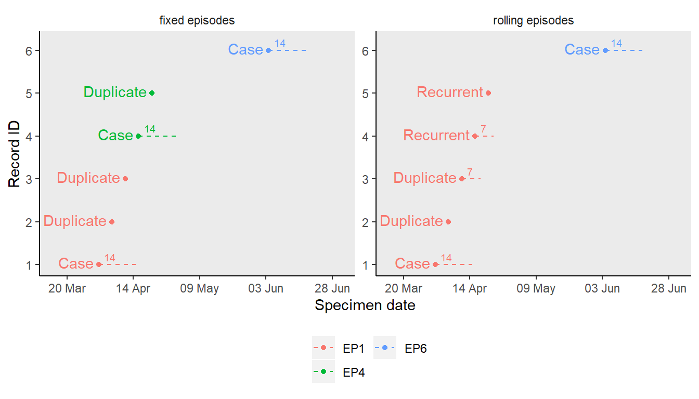
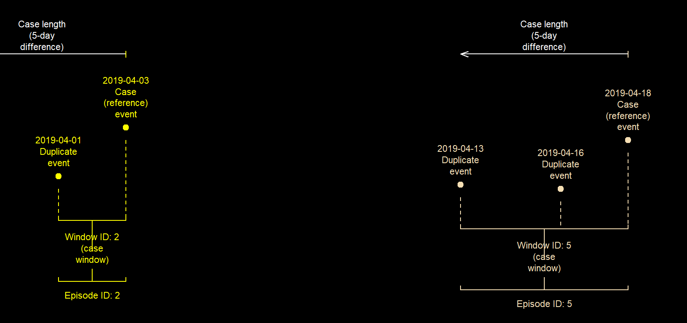

Implementing case definitions for epidemiological analysis in R
24 September 2019
Source:vignettes/episode_group.Rmd
episode_group.RmdIntroduction
Deduplicating events is a major part of establishing a case definition in epidemiological analyses. In such analyses, a reference event is selected and considered the start of an episode, while subequent events within a specified period are considered duplicates.
episode_group() aims to provide a simple and flexible way to group records from multiple datasets into episodes, each lasting a specified period of time. This allows for the deduplication of records, or a sub-analysis within each episode.
Uses
The flexible application of both record_group and episode_group() can allow you apply a variety of case definitions to a dataset. Below are some examples;
- Group events (dated records) or intervals of events (records with start and end periods) into episodes lasting a fixed period (
case_length) from a reference event or interval ("Case"). See episode grouping - Create episodes that reoccur within a defined period (
recurrence_length) from the last event - Create episodes as in examples 1 and 2, and specify which event or period is considered the
"Case". See case assignment - Create episodes with a different
case_lengthand/orrecurrence_lengthfor different subsets of the dataset. See stratified grouping - Create episodes of overlaping events (point in time) e.g. days, minutes, hours. See Useful ways of using episode_group
- Create episodes overlaping intervals (periods of time) e.g. period of days, minutes or hours. See interval grouping
Implementation
Episode grouping
An episode as produced by episode_group() is a set of events/intervals within a specific period of time. Each begins with a reference event/interval ("Case"), and subsequent ones within the same episode is flagged as a "Duplicate" of this "Case".
episode_group() can produce two type of episodes described below;
"fixed"episodes - all events/intervals are within the fixed period (case_length) of a"Case". Any event/interval beyond thiscase_lengthis considered a new epsiode. See stratified grouping"rolling"episodes - In addition to events/intervals within thecase_length, those within periods of recurrence are grouped together as episodes. See episodes windows and recurrence periods.
A "fixed" episode will only have duplicates of the "Case" but a "rolling" episode may have duplicates of both the "Case" and "Recurrent" event/interval.
Episode windows and recurrence periods
An episode window (epid_interval) is the period between the "Case" and the episode’s last event, or the end point of the last interval. For a "fixed" episode, the maximum episode length (epid_length) is "case_length", since any event/interval after that period is considered a new episode.
A recurrence period is a specified period (recurrence_length) after the last "Duplicate" event/interval. When there’s no "Duplicate" event/interval, it’s the recurrence_length after the last "Case" or "Recurrent" event/interval.
Only "rolling" episodes have recurrence periods. There can also be multiple recurrence periods within one episode. For a "rolling" episode, the episode window (epid_interval) is the period covering the initial case_length and all recurrence periods in the episode.
The two examples below demonstrates the different implementations of "fixed" and "rolling" episode grouping.
Example of "fixed" episode grouping
library(dplyr)
library(lubridate)
library(diyar)
data("infections_2"); infections_2
#> # A tibble: 6 x 6
#> rid date pid infx epi recur
#> <int> <date> <dbl> <chr> <dbl> <dbl>
#> 1 1 2019-04-01 1 E. coli BSI 14 7
#> 2 2 2019-04-06 1 E. coli BSI 14 7
#> 3 3 2019-04-11 1 E. coli BSI 14 7
#> 4 4 2019-04-16 1 E. coli BSI 14 7
#> 5 5 2019-04-21 1 E. coli BSI 14 7
#> 6 6 2019-06-04 1 E. coli BSI 14 7
# Fixed episodes
fixed_episodes <- cbind(
infections_2,
episode_group(infections_2, rid, pid, date, epi,
group_stats = TRUE)
)
#> Episode or recurrence window 1.
#> 3 of 6 record(s) grouped into episodes. 3 records not yet grouped.
#> Episode or recurrence window 2.
#> 2 of 3 record(s) grouped into episodes. 1 records not yet grouped.
#> Episode or recurrence window 3.
#> 1 of 1 record(s) grouped into episodes. 0 records not yet grouped.
#>
#> Episode grouping complete - 1 record(s) assinged a unique ID.
fixed_episodes
#> rid date pid infx epi recur sn epid case_nm epid_length
#> 1 1 2019-04-01 1 E. coli BSI 14 7 1 1 Case 10 days
#> 2 2 2019-04-06 1 E. coli BSI 14 7 2 1 Duplicate 10 days
#> 3 3 2019-04-11 1 E. coli BSI 14 7 3 1 Duplicate 10 days
#> 4 4 2019-04-16 1 E. coli BSI 14 7 4 4 Case 5 days
#> 5 5 2019-04-21 1 E. coli BSI 14 7 5 4 Duplicate 5 days
#> 6 6 2019-06-04 1 E. coli BSI 14 7 6 6 Case 0 days
#> epid_total epid_interval
#> 1 3 2019-04-01 -> 2019-04-11
#> 2 3 2019-04-01 -> 2019-04-11
#> 3 3 2019-04-01 -> 2019-04-11
#> 4 2 2019-04-16 -> 2019-04-21
#> 5 2 2019-04-16 -> 2019-04-21
#> 6 1 2019-06-04 == 2019-06-04Records 1 to 3 are assigned a unique episode ID ("1") (Table 1). In this instance, record 1 is considered the initial "Case" and records 2 and 3 its duplicates. This is because records 2 and 3 are dated within 15 days of record 1 (difference of 14 days). Record 4 is dated after this 15-day period and so begins a new "Case" which is assigned episode ID "4". Record 5 is within 15 days of record 4 ("Case"), so it’s considered a "Duplicate" of record 4 and assigned the same episode ID as record 4. This process continues chronologically until all records have been assigned an episode ID.
Example of "rolling" episode grouping
# Rolling episodes
# Progress messages can be turned off with the display argument
rolling_episodes <- cbind(
infections_2,
episode_group(infections_2, sn = rid, strata = pid, date =date,
case_length = epi, episode_type = "rolling",
recurrence_length = recur,
display = FALSE, group_stats = TRUE)
)
#> Episode grouping complete - 1 record(s) assinged a unique ID.
rolling_episodes
#> rid date pid infx epi recur sn epid case_nm epid_length
#> 1 1 2019-04-01 1 E. coli BSI 14 7 1 1 Case 20 days
#> 2 2 2019-04-06 1 E. coli BSI 14 7 2 1 Duplicate 20 days
#> 3 3 2019-04-11 1 E. coli BSI 14 7 3 1 Duplicate 20 days
#> 4 4 2019-04-16 1 E. coli BSI 14 7 4 1 Recurrent 20 days
#> 5 5 2019-04-21 1 E. coli BSI 14 7 5 1 Recurrent 20 days
#> 6 6 2019-06-04 1 E. coli BSI 14 7 6 6 Case 0 days
#> epid_total epid_interval
#> 1 5 2019-04-01 -> 2019-04-21
#> 2 5 2019-04-01 -> 2019-04-21
#> 3 5 2019-04-01 -> 2019-04-21
#> 4 5 2019-04-01 -> 2019-04-21
#> 5 5 2019-04-01 -> 2019-04-21
#> 6 1 2019-06-04 == 2019-06-04Similarly, in the "rolling" episode example, records 1 to 3 are grouped into episode "1" however, unlike the "fixed" episode example, record 4 is not considered a new "Case". Instead it’s also grouped as episode "1" as a "Recurrent" record because it’s within 8 days of the last "Duplicate" (record 3). Record 5 is also assigned to episode "1" because it’s within 8 days of the last record 4 ("Recurrent" record). Record 6 is not within 15 days of the "Case" (record 1) and not within 8 days of the last "Recurrent" record (record 4), and so is now considered a new "Case".
The "Recurrent" record is the first event within a specified period (recurrence_length) after the last event ("Case", "Duplicate" or "Recurrent") in the previous case_length or recurrence_length.
Figure 1: "Fixed" and "rolling" episodes with their respective case_lenth and recurrence_length

If your case definition does not explicitly require a rolling episode, use fixed episode grouping as it takes less time to complete.
By default, episode_group() will continue checking for "Recurrent" records indefintely, but you can limit the number of recurrence periods an episode can have using rolls_max.
data("infections_3"); infections_3
#> # A tibble: 11 x 5
#> rid date pid epi recur
#> <int> <date> <dbl> <dbl> <dbl>
#> 1 1 2019-04-01 1 2 2
#> 2 2 2019-04-02 1 2 2
#> 3 3 2019-04-03 1 2 2
#> 4 4 2019-04-04 1 2 2
#> 5 5 2019-04-05 1 2 2
#> 6 6 2019-04-06 1 2 2
#> 7 7 2019-04-07 1 2 2
#> 8 8 2019-04-08 1 2 2
#> 9 9 2019-04-09 1 2 2
#> 10 10 2019-04-10 1 2 2
#> 11 11 2019-04-11 1 2 2
# Infinite recurrence periods per episode (Default)
cbind(
infections_3,
episode_group(infections_3, sn = rid, strata = pid, date =date, case_length = epi,
episode_type = "rolling", recurrence_length = recur, display = FALSE)
)
#> Episode grouping complete - 0 record(s) assinged a unique ID.
#> rid date pid epi recur sn epid case_nm
#> 1 1 2019-04-01 1 2 2 1 1 Case
#> 2 2 2019-04-02 1 2 2 2 1 Duplicate
#> 3 3 2019-04-03 1 2 2 3 1 Duplicate
#> 4 4 2019-04-04 1 2 2 4 1 Recurrent
#> 5 5 2019-04-05 1 2 2 5 1 Duplicate
#> 6 6 2019-04-06 1 2 2 6 1 Recurrent
#> 7 7 2019-04-07 1 2 2 7 1 Duplicate
#> 8 8 2019-04-08 1 2 2 8 1 Recurrent
#> 9 9 2019-04-09 1 2 2 9 1 Duplicate
#> 10 10 2019-04-10 1 2 2 10 1 Recurrent
#> 11 11 2019-04-11 1 2 2 11 1 Duplicate
# Maximum of one recurrence period per episode
cbind(
infections_3,
episode_group(infections_3, sn = rid, strata = pid, date =date, case_length = epi,
episode_type = "rolling", recurrence_length = recur, rolls_max = 1,
display = FALSE)
)
#> Episode grouping complete - 1 record(s) assinged a unique ID.
#> rid date pid epi recur sn epid case_nm
#> 1 1 2019-04-01 1 2 2 1 1 Case
#> 2 2 2019-04-02 1 2 2 2 1 Duplicate
#> 3 3 2019-04-03 1 2 2 3 1 Duplicate
#> 4 4 2019-04-04 1 2 2 4 1 Recurrent
#> 5 5 2019-04-05 1 2 2 5 1 Duplicate
#> 6 6 2019-04-06 1 2 2 6 6 Case
#> 7 7 2019-04-07 1 2 2 7 6 Duplicate
#> 8 8 2019-04-08 1 2 2 8 6 Duplicate
#> 9 9 2019-04-09 1 2 2 9 6 Recurrent
#> 10 10 2019-04-10 1 2 2 10 6 Duplicate
#> 11 11 2019-04-11 1 2 2 11 11 Case
# Maximum of two recurrence periods per episode
cbind(
infections_3,
episode_group(infections_3, sn = rid, strata = pid, date =date, case_length = epi,
episode_type = "rolling", recurrence_length = recur, rolls_max = 2,
display = FALSE)
)
#> Episode grouping complete - 0 record(s) assinged a unique ID.
#> rid date pid epi recur sn epid case_nm
#> 1 1 2019-04-01 1 2 2 1 1 Case
#> 2 2 2019-04-02 1 2 2 2 1 Duplicate
#> 3 3 2019-04-03 1 2 2 3 1 Duplicate
#> 4 4 2019-04-04 1 2 2 4 1 Recurrent
#> 5 5 2019-04-05 1 2 2 5 1 Duplicate
#> 6 6 2019-04-06 1 2 2 6 1 Recurrent
#> 7 7 2019-04-07 1 2 2 7 1 Duplicate
#> 8 8 2019-04-08 1 2 2 8 8 Case
#> 9 9 2019-04-09 1 2 2 9 8 Duplicate
#> 10 10 2019-04-10 1 2 2 10 8 Duplicate
#> 11 11 2019-04-11 1 2 2 11 8 RecurrentYou can also limit the number of episodes to create per strata using episode_max. When episode_max is reached, any record not yet grouped is assigned a unique episode ID, making it a unique "Case".
# Maximum of one episode with one recurrence period
cbind(
infections_3,
episode_group(infections_3, sn = rid, strata = pid, date =date, case_length = epi,
episode_type = "rolling", recurrence_length = recur,
rolls_max = 1, episodes_max = 1, display = FALSE)
)
#> Episode grouping complete - 6 record(s) assinged a unique ID.
#> rid date pid epi recur sn epid case_nm
#> 1 1 2019-04-01 1 2 2 1 1 Case
#> 2 2 2019-04-02 1 2 2 2 1 Duplicate
#> 3 3 2019-04-03 1 2 2 3 1 Duplicate
#> 4 4 2019-04-04 1 2 2 4 1 Recurrent
#> 5 5 2019-04-05 1 2 2 5 1 Duplicate
#> 6 6 2019-04-06 1 2 2 6 6 Case
#> 7 7 2019-04-07 1 2 2 7 7 Case
#> 8 8 2019-04-08 1 2 2 8 8 Case
#> 9 9 2019-04-09 1 2 2 9 9 Case
#> 10 10 2019-04-10 1 2 2 10 10 Case
#> 11 11 2019-04-11 1 2 2 11 11 Case
# Maximum of two episodes with one recurrence period
cbind(
infections_3,
episode_group(infections_3, sn = rid, strata = pid, date =date, case_length = epi,
episode_type = "rolling", recurrence_length = recur,
rolls_max = 1, episodes_max = 2, display = FALSE)
)
#> Episode grouping complete - 1 record(s) assinged a unique ID.
#> rid date pid epi recur sn epid case_nm
#> 1 1 2019-04-01 1 2 2 1 1 Case
#> 2 2 2019-04-02 1 2 2 2 1 Duplicate
#> 3 3 2019-04-03 1 2 2 3 1 Duplicate
#> 4 4 2019-04-04 1 2 2 4 1 Recurrent
#> 5 5 2019-04-05 1 2 2 5 1 Duplicate
#> 6 6 2019-04-06 1 2 2 6 6 Case
#> 7 7 2019-04-07 1 2 2 7 6 Duplicate
#> 8 8 2019-04-08 1 2 2 8 6 Duplicate
#> 9 9 2019-04-09 1 2 2 9 6 Recurrent
#> 10 10 2019-04-10 1 2 2 10 6 Duplicate
#> 11 11 2019-04-11 1 2 2 11 11 CaseCase assignment
By default, episode grouping begins at the earliest event/interval and proceeds to the most recent one, making the earliest event/interval the "Case" (or "Recurrent" record for a recurrence period). For the opposite behaviour, change from_last to TRUE. Doing this will start episode grouping at the most recent event/interval and proceed backwards to the earliest one, making the most recent one the "Case" (or "Recurrent" record for a recurrence period).
# Episode grouping in chronological order
cbind(
infections_2,
episode_group(infections_2, rid, pid, date, epi, display = FALSE)
)
#> Episode grouping complete - 1 record(s) assinged a unique ID.
#> rid date pid infx epi recur sn epid case_nm
#> 1 1 2019-04-01 1 E. coli BSI 14 7 1 1 Case
#> 2 2 2019-04-06 1 E. coli BSI 14 7 2 1 Duplicate
#> 3 3 2019-04-11 1 E. coli BSI 14 7 3 1 Duplicate
#> 4 4 2019-04-16 1 E. coli BSI 14 7 4 4 Case
#> 5 5 2019-04-21 1 E. coli BSI 14 7 5 4 Duplicate
#> 6 6 2019-06-04 1 E. coli BSI 14 7 6 6 Case
# Episode grouping in reverse chronological order
cbind(
infections_2,
episode_group(infections_2, rid, pid, date, epi, from_last = TRUE, display = FALSE)
)
#> Episode grouping complete - 1 record(s) assinged a unique ID.
#> rid date pid infx epi recur sn epid case_nm
#> 1 1 2019-04-01 1 E. coli BSI 14 7 1 2 Duplicate
#> 2 2 2019-04-06 1 E. coli BSI 14 7 2 2 Case
#> 3 3 2019-04-11 1 E. coli BSI 14 7 3 5 Duplicate
#> 4 4 2019-04-16 1 E. coli BSI 14 7 4 5 Duplicate
#> 5 5 2019-04-21 1 E. coli BSI 14 7 5 5 Case
#> 6 6 2019-06-04 1 E. coli BSI 14 7 6 6 CaseUser defined case assignment
You can specify a different preference for case assignment from what’s been described above. This is done using custom_sort - an ordered selection of columns, whose values when sorted in ascending order specifies the required preference.
As an example, we’ll use this feature to implement a case definition where E. coli urinary tract infections (UTI) are considered precursors to E. coli bloodstream infections (BSI). As a result, episodes need to be created in such a way that; if there are UTI and BSI records within the same case_length, episode grouping will start from the UTI record.
The column(s) used for custom_sort can be "character", "numeric" or "factor" data types. However, each would follow R standard sort behaviour. For example, a factor will sort on its levels not the descriptive label. See examples of this below.
infections_2a <- mutate(infections_2, infx=ifelse(row_number() %in% c(2,5), "E. coli UTI", infx))
cbind(
infections_2a,
episode_group(infections_2a, sn=rid, strata=pid, date=date, case_length =epi,
custom_sort = infx, display = FALSE)
)
#> Episode grouping complete - 1 record(s) assinged a unique ID.
#> rid date pid infx epi recur sn epid case_nm
#> 1 1 2019-04-01 1 E. coli BSI 14 7 1 1 Case
#> 2 2 2019-04-06 1 E. coli UTI 14 7 2 1 Duplicate
#> 3 3 2019-04-11 1 E. coli BSI 14 7 3 1 Duplicate
#> 4 4 2019-04-16 1 E. coli BSI 14 7 4 4 Case
#> 5 5 2019-04-21 1 E. coli UTI 14 7 5 4 Duplicate
#> 6 6 2019-06-04 1 E. coli BSI 14 7 6 6 Case
infections_2a <- mutate(infections_2a,infx = factor(infx, levels = c("E. coli UTI","E. coli BSI")))
cbind(
infections_2a,
episode_group(infections_2a, sn=rid, strata=pid, date=date, case_length =epi, custom_sort = infx, display = FALSE)
)
#> Episode grouping complete - 3 record(s) assinged a unique ID.
#> rid date pid infx epi recur sn epid case_nm
#> 1 1 2019-04-01 1 E. coli BSI 14 7 1 1 Case
#> 2 2 2019-04-06 1 E. coli UTI 14 7 2 2 Case
#> 3 3 2019-04-11 1 E. coli BSI 14 7 3 2 Duplicate
#> 4 4 2019-04-16 1 E. coli BSI 14 7 4 2 Duplicate
#> 5 5 2019-04-21 1 E. coli UTI 14 7 5 5 Case
#> 6 6 2019-06-04 1 E. coli BSI 14 7 6 6 CaseIn the second example above, after changing the sort preference using factor levels, record 1 (E. coli BSI) and record 2 (E. coli UTI) are no longer part of the same episode. This is because record 2, is now the reference record, and since record 1 occurred before record 2, they are not grouped as the same episode.
This may suffice depending on your case definition, or you can use bi_direction to ensure that events before and after the "Case" are grouped together. See the example below where record 1 is now flagged as a duplicate of record 2.
cbind(
infections_2a,
episode_group(infections_2a, sn=rid, strata=pid, date=date,
case_length =epi, custom_sort = infx, bi_direction = TRUE, display = FALSE)
)
#> Episode grouping complete - 1 record(s) assinged a unique ID.
#> rid date pid infx epi recur sn epid case_nm
#> 1 1 2019-04-01 1 E. coli BSI 14 7 1 2 Duplicate
#> 2 2 2019-04-06 1 E. coli UTI 14 7 2 2 Case
#> 3 3 2019-04-11 1 E. coli BSI 14 7 3 2 Duplicate
#> 4 4 2019-04-16 1 E. coli BSI 14 7 4 2 Duplicate
#> 5 5 2019-04-21 1 E. coli UTI 14 7 5 2 Duplicate
#> 6 6 2019-06-04 1 E. coli BSI 14 7 6 6 CaseA different approach can be to create episodes without custom_sort, and then pick a preferred record as the “case”. However note that, since episode grouping did not begin as this preferred method, the result may differ from when custom_sort is used.
As seen below, using this approach also yields three episodes just as above. However, record 4 belongs to different episodes in both. This is because even though record 2 was picked as the "Case", episode grouping did not start there.
cbind(
infections_2a,
episode_group(infections_2a, sn=rid, strata=pid, date=date, case_length =epi,
display = FALSE)
) %>%
group_by(epid) %>%
mutate(
case_nm = case_when(
infx=="E. coli UTI" & n()>1 & case_nm == "Duplicate" ~ "Case",
infx=="E. coli BSI" & n()>1 & case_nm == "Case" ~ "Duplicate",
TRUE ~ case_nm
)
) %>%
ungroup() %>%
as.data.frame() %>%
select(-starts_with("dup"))
#> Episode grouping complete - 1 record(s) assinged a unique ID.
#> rid date pid infx epi recur sn epid case_nm
#> 1 1 2019-04-01 1 E. coli BSI 14 7 1 1 Duplicate
#> 2 2 2019-04-06 1 E. coli UTI 14 7 2 1 Case
#> 3 3 2019-04-11 1 E. coli BSI 14 7 3 1 Duplicate
#> 4 4 2019-04-16 1 E. coli BSI 14 7 4 4 Duplicate
#> 5 5 2019-04-21 1 E. coli UTI 14 7 5 4 Case
#> 6 6 2019-06-04 1 E. coli BSI 14 7 6 6 CaseInterval grouping
In addition to grouping events that occured at a point in time, you can also group events that occured over a period of time (intervals). For the purpose of episode grouping, an interval is a record with start and end points in time. The interval should be created as a number_line object and supplied to the date argument.
In the example below, we group periods of hospital admissions into episodes. This is different from grouping the admission or discharge events into episodes.
data("hospital_admissions"); hospital_admissions
#> # A tibble: 9 x 4
#> rd_id admin_dt discharge_dt epi_len
#> <int> <date> <date> <dbl>
#> 1 1 2019-01-01 2019-01-01 0
#> 2 2 2019-01-01 2019-01-10 0
#> 3 3 2019-01-10 2019-01-13 0
#> 4 4 2019-01-05 2019-01-06 0
#> 5 5 2019-01-05 2019-01-15 0
#> 6 6 2019-01-07 2019-01-15 0
#> 7 7 2019-01-04 2019-01-13 0
#> 8 8 2019-01-20 2019-01-30 0
#> 9 9 2019-01-26 2019-01-31 0
hospital_admissions$admin_period <- number_line(hospital_admissions$admin_dt, hospital_admissions$discharge_dt)
# Grouping the actual admissions into episodes
cbind(
hospital_admissions,
episode_group(hospital_admissions, date=admin_dt, sn=rd_id, case_length = epi_len,
display = FALSE)
) %>% select(-admin_period)
#> Episode grouping complete - 5 record(s) assinged a unique ID.
#> rd_id admin_dt discharge_dt epi_len sn epid case_nm
#> 1 1 2019-01-01 2019-01-01 0 1 1 Case
#> 2 2 2019-01-01 2019-01-10 0 2 1 Duplicate
#> 3 3 2019-01-10 2019-01-13 0 3 3 Case
#> 4 4 2019-01-05 2019-01-06 0 4 4 Case
#> 5 5 2019-01-05 2019-01-15 0 5 4 Duplicate
#> 6 6 2019-01-07 2019-01-15 0 6 6 Case
#> 7 7 2019-01-04 2019-01-13 0 7 7 Case
#> 8 8 2019-01-20 2019-01-30 0 8 8 Case
#> 9 9 2019-01-26 2019-01-31 0 9 9 Case
# Grouping the periods admissions (admission -> discharge)
cbind(
hospital_admissions,
episode_group(hospital_admissions, date=admin_period, sn=rd_id, case_length = epi_len,
display = FALSE)
) %>% select(-admin_dt, -discharge_dt)
#> Episode grouping complete - 0 record(s) assinged a unique ID.
#> rd_id epi_len admin_period sn epid case_nm
#> 1 1 0 2019-01-01 == 2019-01-01 1 2 Duplicate
#> 2 2 0 2019-01-01 -> 2019-01-10 2 2 Case
#> 3 3 0 2019-01-10 -> 2019-01-13 3 2 Duplicate
#> 4 4 0 2019-01-05 -> 2019-01-06 4 2 Duplicate
#> 5 5 0 2019-01-05 -> 2019-01-15 5 2 Duplicate
#> 6 6 0 2019-01-07 -> 2019-01-15 6 2 Duplicate
#> 7 7 0 2019-01-04 -> 2019-01-13 7 2 Duplicate
#> 8 8 0 2019-01-20 -> 2019-01-30 8 8 Case
#> 9 9 0 2019-01-26 -> 2019-01-31 9 8 DuplicateIntervals are grouped together if they overlaps. Furthermore, the intervals can overlap in different ways, and the function allows you to choose how this happens by using overlap_method. The options are; "across", "inbetween", "chain", "aligns_start" and "aligns_end". The default option is to use all methods. The examples and figure below demonstrates each method.
# Overlaping intervals
across <- cbind(
hospital_admissions,
episode_group(hospital_admissions, date=admin_period, sn=rd_id, case_length = epi_len,
overlap_method = "across", display = FALSE)
) %>% select(-admin_dt, -discharge_dt)
#> Episode grouping complete - 3 record(s) assinged a unique ID.
across
#> rd_id epi_len admin_period sn epid case_nm
#> 1 1 0 2019-01-01 == 2019-01-01 1 1 Case
#> 2 2 0 2019-01-01 -> 2019-01-10 2 2 Case
#> 3 3 0 2019-01-10 -> 2019-01-13 3 3 Case
#> 4 4 0 2019-01-05 -> 2019-01-06 4 4 Case
#> 5 5 0 2019-01-05 -> 2019-01-15 5 2 Duplicate
#> 6 6 0 2019-01-07 -> 2019-01-15 6 2 Duplicate
#> 7 7 0 2019-01-04 -> 2019-01-13 7 2 Duplicate
#> 8 8 0 2019-01-20 -> 2019-01-30 8 8 Case
#> 9 9 0 2019-01-26 -> 2019-01-31 9 8 Duplicate
# Chained intervals
chain <- cbind(
hospital_admissions,
episode_group(hospital_admissions, date=admin_period, sn=rd_id, case_length = epi_len,
overlap_method = "chain", display = FALSE)
) %>% select(-admin_dt, -discharge_dt)
#> Episode grouping complete - 6 record(s) assinged a unique ID.
chain
#> rd_id epi_len admin_period sn epid case_nm
#> 1 1 0 2019-01-01 == 2019-01-01 1 2 Duplicate
#> 2 2 0 2019-01-01 -> 2019-01-10 2 2 Case
#> 3 3 0 2019-01-10 -> 2019-01-13 3 2 Duplicate
#> 4 4 0 2019-01-05 -> 2019-01-06 4 4 Case
#> 5 5 0 2019-01-05 -> 2019-01-15 5 5 Case
#> 6 6 0 2019-01-07 -> 2019-01-15 6 6 Case
#> 7 7 0 2019-01-04 -> 2019-01-13 7 7 Case
#> 8 8 0 2019-01-20 -> 2019-01-30 8 8 Case
#> 9 9 0 2019-01-26 -> 2019-01-31 9 9 Case
# Intervals with aligned end points
aligns_end <- cbind(
hospital_admissions,
episode_group(hospital_admissions, date=admin_period, sn=rd_id, case_length = epi_len,
overlap_method = "aligns_end", display = FALSE)
) %>% select(-admin_dt, -discharge_dt)
#> Episode grouping complete - 5 record(s) assinged a unique ID.
aligns_end
#> rd_id epi_len admin_period sn epid case_nm
#> 1 1 0 2019-01-01 == 2019-01-01 1 1 Case
#> 2 2 0 2019-01-01 -> 2019-01-10 2 2 Case
#> 3 3 0 2019-01-10 -> 2019-01-13 3 7 Duplicate
#> 4 4 0 2019-01-05 -> 2019-01-06 4 4 Case
#> 5 5 0 2019-01-05 -> 2019-01-15 5 5 Case
#> 6 6 0 2019-01-07 -> 2019-01-15 6 5 Duplicate
#> 7 7 0 2019-01-04 -> 2019-01-13 7 7 Case
#> 8 8 0 2019-01-20 -> 2019-01-30 8 8 Case
#> 9 9 0 2019-01-26 -> 2019-01-31 9 9 Case
# Intervals with aligned start points
aligns_start <- cbind(
hospital_admissions,
episode_group(hospital_admissions, date=admin_period, sn=rd_id, case_length = epi_len,
overlap_method = "aligns_start", display = FALSE)
) %>% select(-admin_dt, -discharge_dt)
#> Episode grouping complete - 5 record(s) assinged a unique ID.
aligns_start
#> rd_id epi_len admin_period sn epid case_nm
#> 1 1 0 2019-01-01 == 2019-01-01 1 2 Duplicate
#> 2 2 0 2019-01-01 -> 2019-01-10 2 2 Case
#> 3 3 0 2019-01-10 -> 2019-01-13 3 3 Case
#> 4 4 0 2019-01-05 -> 2019-01-06 4 5 Duplicate
#> 5 5 0 2019-01-05 -> 2019-01-15 5 5 Case
#> 6 6 0 2019-01-07 -> 2019-01-15 6 6 Case
#> 7 7 0 2019-01-04 -> 2019-01-13 7 7 Case
#> 8 8 0 2019-01-20 -> 2019-01-30 8 8 Case
#> 9 9 0 2019-01-26 -> 2019-01-31 9 9 Case
# Intervals occuring completely within others
inbetween <- cbind(
hospital_admissions,
episode_group(hospital_admissions, date=admin_period, sn=rd_id, case_length = epi_len,
overlap_method = "inbetween", display = FALSE)
) %>% select(-admin_dt, -discharge_dt)
#> Episode grouping complete - 5 record(s) assinged a unique ID.
inbetween
#> rd_id epi_len admin_period sn epid case_nm
#> 1 1 0 2019-01-01 == 2019-01-01 1 1 Case
#> 2 2 0 2019-01-01 -> 2019-01-10 2 2 Case
#> 3 3 0 2019-01-10 -> 2019-01-13 3 5 Duplicate
#> 4 4 0 2019-01-05 -> 2019-01-06 4 2 Duplicate
#> 5 5 0 2019-01-05 -> 2019-01-15 5 5 Case
#> 6 6 0 2019-01-07 -> 2019-01-15 6 6 Case
#> 7 7 0 2019-01-04 -> 2019-01-13 7 7 Case
#> 8 8 0 2019-01-20 -> 2019-01-30 8 8 Case
#> 9 9 0 2019-01-26 -> 2019-01-31 9 9 Case
# Intervals occuring completely within others
chain_inbetween <- cbind(
hospital_admissions,
episode_group(hospital_admissions, date=admin_period, sn=rd_id, case_length = epi_len,
overlap_method = c("chain","inbetween"), display = FALSE)
) %>% select(-admin_dt, -discharge_dt)
#> Episode grouping complete - 5 record(s) assinged a unique ID.
chain_inbetween
#> rd_id epi_len admin_period sn epid case_nm
#> 1 1 0 2019-01-01 == 2019-01-01 1 2 Duplicate
#> 2 2 0 2019-01-01 -> 2019-01-10 2 2 Case
#> 3 3 0 2019-01-10 -> 2019-01-13 3 2 Duplicate
#> 4 4 0 2019-01-05 -> 2019-01-06 4 2 Duplicate
#> 5 5 0 2019-01-05 -> 2019-01-15 5 5 Case
#> 6 6 0 2019-01-07 -> 2019-01-15 6 6 Case
#> 7 7 0 2019-01-04 -> 2019-01-13 7 7 Case
#> 8 8 0 2019-01-20 -> 2019-01-30 8 8 Case
#> 9 9 0 2019-01-26 -> 2019-01-31 9 9 CaseFigure 2: Different options for overlap_method using a case_length of "0" days. 
Figure 3: Different options for overlap_method using a case_length of "30" days
Different combinations of rolling and fixed episodes of intervals can have the same result but for different reasons. See Figure 4
fixed_intervals_a <- mutate(hospital_admissions, recur_len = 0) %>%
cbind(.,episode_group(., date=admin_period, sn=rd_id, case_length = epi_len,
display = FALSE)
) %>% select(-admin_dt, -discharge_dt)
#> Episode grouping complete - 0 record(s) assinged a unique ID.
fixed_intervals_a
#> rd_id epi_len admin_period recur_len sn epid case_nm
#> 1 1 0 2019-01-01 == 2019-01-01 0 1 2 Duplicate
#> 2 2 0 2019-01-01 -> 2019-01-10 0 2 2 Case
#> 3 3 0 2019-01-10 -> 2019-01-13 0 3 2 Duplicate
#> 4 4 0 2019-01-05 -> 2019-01-06 0 4 2 Duplicate
#> 5 5 0 2019-01-05 -> 2019-01-15 0 5 2 Duplicate
#> 6 6 0 2019-01-07 -> 2019-01-15 0 6 2 Duplicate
#> 7 7 0 2019-01-04 -> 2019-01-13 0 7 2 Duplicate
#> 8 8 0 2019-01-20 -> 2019-01-30 0 8 8 Case
#> 9 9 0 2019-01-26 -> 2019-01-31 0 9 8 Duplicate
fixed_intervals_b <- mutate(hospital_admissions, recur_len = 0, epi_len=20) %>%
cbind(.,episode_group(., date=admin_period, sn=rd_id, case_length = epi_len,
display = FALSE)
) %>% select(-admin_dt, -discharge_dt)
#> Episode grouping complete - 0 record(s) assinged a unique ID.
fixed_intervals_b
#> rd_id epi_len admin_period recur_len sn epid case_nm
#> 1 1 20 2019-01-01 == 2019-01-01 0 1 2 Duplicate
#> 2 2 20 2019-01-01 -> 2019-01-10 0 2 2 Case
#> 3 3 20 2019-01-10 -> 2019-01-13 0 3 2 Duplicate
#> 4 4 20 2019-01-05 -> 2019-01-06 0 4 2 Duplicate
#> 5 5 20 2019-01-05 -> 2019-01-15 0 5 2 Duplicate
#> 6 6 20 2019-01-07 -> 2019-01-15 0 6 2 Duplicate
#> 7 7 20 2019-01-04 -> 2019-01-13 0 7 2 Duplicate
#> 8 8 20 2019-01-20 -> 2019-01-30 0 8 2 Duplicate
#> 9 9 20 2019-01-26 -> 2019-01-31 0 9 2 Duplicate
rolling_intervals_a <- mutate(hospital_admissions, recur_len = 4) %>%
cbind(.,episode_group(., date=admin_period, sn=rd_id, case_length = epi_len,
episode_type = "rolling", recurrence_length = recur_len,
display = FALSE)
) %>% select(-admin_dt, -discharge_dt)
#> Episode grouping complete - 0 record(s) assinged a unique ID.
rolling_intervals_a
#> rd_id epi_len admin_period recur_len sn epid case_nm
#> 1 1 0 2019-01-01 == 2019-01-01 4 1 2 Duplicate
#> 2 2 0 2019-01-01 -> 2019-01-10 4 2 2 Case
#> 3 3 0 2019-01-10 -> 2019-01-13 4 3 2 Duplicate
#> 4 4 0 2019-01-05 -> 2019-01-06 4 4 2 Duplicate
#> 5 5 0 2019-01-05 -> 2019-01-15 4 5 2 Duplicate
#> 6 6 0 2019-01-07 -> 2019-01-15 4 6 2 Duplicate
#> 7 7 0 2019-01-04 -> 2019-01-13 4 7 2 Duplicate
#> 8 8 0 2019-01-20 -> 2019-01-30 4 8 8 Case
#> 9 9 0 2019-01-26 -> 2019-01-31 4 9 8 Duplicate
rolling_intervals_b <- mutate(hospital_admissions, recur_len = 10) %>%
cbind(.,episode_group(., date=admin_period, sn=rd_id, case_length = epi_len,
episode_type = "rolling", recurrence_length = recur_len,
display = FALSE)
) %>% select(-admin_dt, -discharge_dt)
#> Episode grouping complete - 0 record(s) assinged a unique ID.
rolling_intervals_b
#> rd_id epi_len admin_period recur_len sn epid case_nm
#> 1 1 0 2019-01-01 == 2019-01-01 10 1 2 Duplicate
#> 2 2 0 2019-01-01 -> 2019-01-10 10 2 2 Case
#> 3 3 0 2019-01-10 -> 2019-01-13 10 3 2 Duplicate
#> 4 4 0 2019-01-05 -> 2019-01-06 10 4 2 Duplicate
#> 5 5 0 2019-01-05 -> 2019-01-15 10 5 2 Duplicate
#> 6 6 0 2019-01-07 -> 2019-01-15 10 6 2 Duplicate
#> 7 7 0 2019-01-04 -> 2019-01-13 10 7 2 Duplicate
#> 8 8 0 2019-01-20 -> 2019-01-30 10 8 2 Recurrent
#> 9 9 0 2019-01-26 -> 2019-01-31 10 9 2 RecurrentFigure 4: Fixed and rolling episodes of periods of hospital admissions 
Stratified episode grouping
Episode grouping can be done separately per subset (strata) of the dataset. Examples of a strata could be patient IDs, type of pathogen, source of infection or a combination of these parameters. Episodes will not overlap across different strata but can have different case_length and recurrence_lenght.
record_group() is useful for creating a group identifiers to be used as a strata. See record group for further details.
As an example, using the infections_2 dataset, a case definition may specify the following;
- UTI and BSI records are considered different episodes regardless of when they occur
- UTI has a
case_lengthof 7 days and recurrence period of 30 days - BSI has a
case_lengthof 14 days and no recurrence period
In the example below, adding infx to the strata argument means that "E. coli UTI" episodes will not overlap with "E. coli BSI" records. Furthermore, the case_length and recurrence_length for each will be different as specified in the epi and recur columns respectively
infections_2b <- mutate(infections_2,
epi = ifelse(infx=="E. coli UTI", 7, 14),
recur = ifelse(infx=="E. coli UTI", 30, 0))
cbind(
infections_2b,
episode_group(infections_2b, sn=rid, strata=c(pid, infx), date=date,
case_length =epi, episode_type = "rolling", recurrence_length = recur,
display = FALSE)
)
#> Episode grouping complete - 1 record(s) assinged a unique ID.
#> rid date pid infx epi recur sn epid case_nm
#> 1 1 2019-04-01 1 E. coli BSI 14 0 1 1 Case
#> 2 2 2019-04-06 1 E. coli BSI 14 0 2 1 Duplicate
#> 3 3 2019-04-11 1 E. coli BSI 14 0 3 1 Duplicate
#> 4 4 2019-04-16 1 E. coli BSI 14 0 4 4 Case
#> 5 5 2019-04-21 1 E. coli BSI 14 0 5 4 Duplicate
#> 6 6 2019-06-04 1 E. coli BSI 14 0 6 6 CaseSub-strata
A sub-strata is created when records within a strata have a different case_length or recurrence_length. The case definition below demonstrates how this can be used.
- UTI and BSI records are different episodes regardless of when they occur.
- UTI have a
case_lengthof 7 days and recurrence period of 30 days - BSI have a
case_lengthof 14 days if not treated, ORcase_lengthof 4 days if treated, and no recurence period in both situations - Respiratory tract infections (RTI) have a
case_lengthof 28 days and recurrence period of 5 days
In this example, whether or not the infection is treated should be considered the sub-strata, and the source of infection considered the strata.
data("infections_4"); infections_4
#> # A tibble: 11 x 8
#> rid date pid organism source treated epi recur
#> <int> <date> <dbl> <chr> <chr> <chr> <dbl> <dbl>
#> 1 1 2019-04-01 1 E. coli UTI - 7 30
#> 2 2 2019-04-06 1 E. coli UTI - 7 30
#> 3 3 2019-04-11 1 E. coli BSI Y 4 0
#> 4 4 2019-04-16 1 E. coli BSI N 14 0
#> 5 5 2019-04-21 1 E. coli BSI Y 4 0
#> 6 6 2019-04-26 1 E. coli RTI Y 28 5
#> 7 7 2019-05-01 1 E. coli RTI N 28 5
#> 8 8 2019-05-06 1 E. coli BSI Y 4 0
#> 9 9 2019-05-11 1 E. coli BSI N 14 0
#> 10 10 2019-05-16 1 E. coli UTI N 7 30
#> 11 11 2019-05-21 1 E. coli UTI N 7 30
cbind(
infections_4,
episode_group(infections_4, sn=rid, strata=c(pid, organism, source), date=date,
case_length =epi, episode_type = "rolling", recurrence_length = recur,
display = FALSE)
)
#> Episode grouping complete - 3 record(s) assinged a unique ID.
#> rid date pid organism source treated epi recur sn epid case_nm
#> 1 1 2019-04-01 1 E. coli UTI - 7 30 1 1 Case
#> 2 2 2019-04-06 1 E. coli UTI - 7 30 2 1 Duplicate
#> 3 3 2019-04-11 1 E. coli BSI Y 4 0 3 3 Case
#> 4 4 2019-04-16 1 E. coli BSI N 14 0 4 4 Case
#> 5 5 2019-04-21 1 E. coli BSI Y 4 0 5 4 Duplicate
#> 6 6 2019-04-26 1 E. coli RTI Y 28 5 6 6 Case
#> 7 7 2019-05-01 1 E. coli RTI N 28 5 7 6 Duplicate
#> 8 8 2019-05-06 1 E. coli BSI Y 4 0 8 8 Case
#> 9 9 2019-05-11 1 E. coli BSI N 14 0 9 9 Case
#> 10 10 2019-05-16 1 E. coli UTI N 7 30 10 10 Case
#> 11 11 2019-05-21 1 E. coli UTI N 7 30 11 10 DuplicateThere are a few things to note with stratified grouping;
- Unless required,
case_lengthandrecurrence_lengthshould be consistent across eachstrataotherwise, you’ll inadvertently create a sub-strata - The behaviour of
episode_grouping()with and without a sub-strata is different and could lead to different results - Using sub-strata is not the same as adding that sub-strata to the
strataargument. In the example above, addingtreatedtostratawill group treated infections separately from untreated infections. While this could be the desired outcome depending on your case definition, the case definition above did not required treated and untreated infections to be grouped separately, only that the treated infections last longer. The example below demonstrates this difference;
cbind(
infections_4,
episode_group(infections_4, sn=rid, strata=c(pid, organism, source, treated), date=date,
case_length =epi, episode_type = "rolling", recurrence_length = recur,
display = FALSE)
)
#> Episode grouping complete - 7 record(s) assinged a unique ID.
#> rid date pid organism source treated epi recur sn epid case_nm
#> 1 1 2019-04-01 1 E. coli UTI - 7 30 1 1 Case
#> 2 2 2019-04-06 1 E. coli UTI - 7 30 2 1 Duplicate
#> 3 3 2019-04-11 1 E. coli BSI Y 4 0 3 3 Case
#> 4 4 2019-04-16 1 E. coli BSI N 14 0 4 4 Case
#> 5 5 2019-04-21 1 E. coli BSI Y 4 0 5 5 Case
#> 6 6 2019-04-26 1 E. coli RTI Y 28 5 6 6 Case
#> 7 7 2019-05-01 1 E. coli RTI N 28 5 7 7 Case
#> 8 8 2019-05-06 1 E. coli BSI Y 4 0 8 8 Case
#> 9 9 2019-05-11 1 E. coli BSI N 14 0 9 9 Case
#> 10 10 2019-05-16 1 E. coli UTI N 7 30 10 10 Case
#> 11 11 2019-05-21 1 E. coli UTI N 7 30 11 10 DuplicateStratified episode grouping will produce the same results as when you subset the dataset by strata and use episode_group() on each. Using stratified episode allows you to avoid repeat analyses.
Useful ways of using episode_group
Episode grouping across other units of time
In the examples above, episode grouping was dne by the days (episode_unit). However, it can be done in other units of time e.g. hours, days or weeks. Acceptable options are those supported by lubridate's duration() function. Below is an example of episode grouping by the hour.
data("hourly_data"); hourly_data
#> rid datetime category epi recur
#> 1 1 2019-04-01 00:00:00 GP1 5 9
#> 2 2 2019-04-01 02:00:00 GP2 5 9
#> 3 3 2019-04-01 04:00:00 GP1 5 9
#> 4 4 2019-04-01 06:00:00 GP2 5 9
#> 5 5 2019-04-01 08:00:00 GP1 5 9
#> 6 6 2019-04-01 10:00:00 GP2 5 9
#> 7 7 2019-04-01 12:00:00 GP1 5 9
#> 8 8 2019-04-01 14:00:00 GP2 5 9
#> 9 9 2019-04-01 16:00:00 GP3 5 9
#> 10 10 2019-04-01 18:00:00 GP3 5 9
#> 11 11 2019-04-01 20:00:00 GP3 5 9
#> 12 12 2019-04-01 22:00:00 GP3 5 9
#> 13 13 2019-04-02 00:00:00 GP3 5 9
cbind(
select(hourly_data, datetime),
episode_group(hourly_data, rid, category, datetime, epi, episode_type = "rolling", episode_unit = "hours", recurrence_length = recur, group_stats = TRUE)
)
#> Episode or recurrence window 1.
#> 7 of 13 record(s) grouped into episodes. 6 records not yet grouped.
#> Episode or recurrence window 2.
#> 6 of 6 record(s) grouped into episodes. 0 records not yet grouped.
#>
#> Episode grouping complete - 0 record(s) assinged a unique ID.
#> datetime sn epid case_nm epid_length epid_total
#> 1 2019-04-01 00:00:00 1 1 Case 12 hours 4
#> 2 2019-04-01 02:00:00 2 2 Case 12 hours 4
#> 3 2019-04-01 04:00:00 3 1 Duplicate 12 hours 4
#> 4 2019-04-01 06:00:00 4 2 Duplicate 12 hours 4
#> 5 2019-04-01 08:00:00 5 1 Recurrent 12 hours 4
#> 6 2019-04-01 10:00:00 6 2 Recurrent 12 hours 4
#> 7 2019-04-01 12:00:00 7 1 Duplicate 12 hours 4
#> 8 2019-04-01 14:00:00 8 2 Duplicate 12 hours 4
#> 9 2019-04-01 16:00:00 9 9 Case 8 hours 5
#> 10 2019-04-01 18:00:00 10 9 Duplicate 8 hours 5
#> 11 2019-04-01 20:00:00 11 9 Duplicate 8 hours 5
#> 12 2019-04-01 22:00:00 12 9 Recurrent 8 hours 5
#> 13 2019-04-02 00:00:00 13 9 Duplicate 8 hours 5
#> epid_interval
#> 1 2019-04-01 00:00:00 -> 2019-04-01 12:00:00
#> 2 2019-04-01 02:00:00 -> 2019-04-01 14:00:00
#> 3 2019-04-01 00:00:00 -> 2019-04-01 12:00:00
#> 4 2019-04-01 02:00:00 -> 2019-04-01 14:00:00
#> 5 2019-04-01 00:00:00 -> 2019-04-01 12:00:00
#> 6 2019-04-01 02:00:00 -> 2019-04-01 14:00:00
#> 7 2019-04-01 00:00:00 -> 2019-04-01 12:00:00
#> 8 2019-04-01 02:00:00 -> 2019-04-01 14:00:00
#> 9 2019-04-01 16:00:00 -> 2019-04-02 00:00:00
#> 10 2019-04-01 16:00:00 -> 2019-04-02 00:00:00
#> 11 2019-04-01 16:00:00 -> 2019-04-02 00:00:00
#> 12 2019-04-01 16:00:00 -> 2019-04-02 00:00:00
#> 13 2019-04-01 16:00:00 -> 2019-04-02 00:00:00Limit episode grouping to a subset of the dataframe
To exclude a subset of the data from episode grouping, you can separate the data.frame and use episode_group() on only the desired subset, before joining it back to the original dataset. episode_group() has a convenience feature to achieve the same thing. To use this, assign NA to the strata to be excluded. These records will be excluded from episode grouping and assigned a unique episode ID.
For example, with the hourly_data, you can decide to exclude "GP1" and "GP2" records from episode grouping as shown below.
head(hourly_data, 10) %>%
mutate(subset = ifelse(category!="GP3", NA, "group")) %>%
cbind(.,episode_group(., rid, subset, datetime, epi, episode_type = "rolling", episode_unit = "hours",
recurrence_length = recur, display = TRUE, group_stats = TRUE))
#> Episode or recurrence window 1.
#> 2 of 2 record(s) grouped into episodes. 0 records not yet grouped.
#>
#> Episode grouping complete - 8 record(s) assinged a unique ID.
#> rid datetime category epi recur subset sn epid case_nm
#> 1 1 2019-04-01 00:00:00 GP1 5 9 <NA> 1 1 Case
#> 2 2 2019-04-01 02:00:00 GP2 5 9 <NA> 2 2 Case
#> 3 3 2019-04-01 04:00:00 GP1 5 9 <NA> 3 3 Case
#> 4 4 2019-04-01 06:00:00 GP2 5 9 <NA> 4 4 Case
#> 5 5 2019-04-01 08:00:00 GP1 5 9 <NA> 5 5 Case
#> 6 6 2019-04-01 10:00:00 GP2 5 9 <NA> 6 6 Case
#> 7 7 2019-04-01 12:00:00 GP1 5 9 <NA> 7 7 Case
#> 8 8 2019-04-01 14:00:00 GP2 5 9 <NA> 8 8 Case
#> 9 9 2019-04-01 16:00:00 GP3 5 9 group 9 9 Case
#> 10 10 2019-04-01 18:00:00 GP3 5 9 group 10 9 Duplicate
#> epid_length epid_total epid_interval
#> 1 0 hours 1 2019-04-01 00:00:00 == 2019-04-01 00:00:00
#> 2 0 hours 1 2019-04-01 02:00:00 == 2019-04-01 02:00:00
#> 3 0 hours 1 2019-04-01 04:00:00 == 2019-04-01 04:00:00
#> 4 0 hours 1 2019-04-01 06:00:00 == 2019-04-01 06:00:00
#> 5 0 hours 1 2019-04-01 08:00:00 == 2019-04-01 08:00:00
#> 6 0 hours 1 2019-04-01 10:00:00 == 2019-04-01 10:00:00
#> 7 0 hours 1 2019-04-01 12:00:00 == 2019-04-01 12:00:00
#> 8 0 hours 1 2019-04-01 14:00:00 == 2019-04-01 14:00:00
#> 9 2 hours 2 2019-04-01 16:00:00 -> 2019-04-01 18:00:00
#> 10 2 hours 2 2019-04-01 16:00:00 -> 2019-04-01 18:00:00fixed_episodes and rolling_episodes functions
fixed_episodes() and rolling_episodes() are convenient implementation of episode_group(). They return number_line objects (epid_interval) with the record identifier supplied (id slot) and episode identifiers created (gid slot).
Both functions are less efficient in deaing with large datasets and lack the following features; “custom_sort”, “rolls_max”, “episodes_max”, “data_source”, “episode_unit”, “bi_direction” and “group_stats”
data(infections); infections
#> # A tibble: 11 x 4
#> rd_id date infection epi_len
#> <int> <date> <chr> <dbl>
#> 1 1 2018-04-01 BSI 15
#> 2 2 2018-04-07 UTI 15
#> 3 3 2018-04-13 UTI 15
#> 4 4 2018-04-19 UTI 15
#> 5 5 2018-04-25 BSI 15
#> 6 6 2018-05-01 UTI 15
#> 7 7 2018-05-07 BSI 15
#> 8 8 2018-05-13 BSI 15
#> 9 9 2018-05-19 RTI 15
#> 10 10 2018-05-25 RTI 15
#> 11 11 2018-05-31 BSI 15
db_a <- infections
# Fixed episodes
f_epi <- fixed_episodes(x = db_a$date, case_length = db_a$epi_len, display = FALSE)
f_epi; str(f_epi)
#> [1] "2018-04-01 -> 2018-04-13" "2018-04-01 -> 2018-04-13"
#> [3] "2018-04-01 -> 2018-04-13" "2018-04-19 -> 2018-05-01"
#> [5] "2018-04-19 -> 2018-05-01" "2018-04-19 -> 2018-05-01"
#> [7] "2018-05-07 -> 2018-05-19" "2018-05-07 -> 2018-05-19"
#> [9] "2018-05-07 -> 2018-05-19" "2018-05-25 -> 2018-05-31"
#> [11] "2018-05-25 -> 2018-05-31"
#> Formal class 'number_line' [package "diyar"] with 4 slots
#> ..@ .Data: num [1:11] 12 12 12 12 12 12 12 12 12 6 ...
#> ..@ start: Date[1:11], format: "2018-04-01" ...
#> ..@ id : int [1:11] 1 2 3 4 5 6 7 8 9 10 ...
#> ..@ gid : int [1:11] 1 1 1 4 4 4 7 7 7 10 ...
# Rolling episodes
r_epi <- rolling_episodes(x = db_a$date, case_length = db_a$epi_len, recurrence_length = 40, display = FALSE)
f_epi; str(f_epi)
#> [1] "2018-04-01 -> 2018-04-13" "2018-04-01 -> 2018-04-13"
#> [3] "2018-04-01 -> 2018-04-13" "2018-04-19 -> 2018-05-01"
#> [5] "2018-04-19 -> 2018-05-01" "2018-04-19 -> 2018-05-01"
#> [7] "2018-05-07 -> 2018-05-19" "2018-05-07 -> 2018-05-19"
#> [9] "2018-05-07 -> 2018-05-19" "2018-05-25 -> 2018-05-31"
#> [11] "2018-05-25 -> 2018-05-31"
#> Formal class 'number_line' [package "diyar"] with 4 slots
#> ..@ .Data: num [1:11] 12 12 12 12 12 12 12 12 12 6 ...
#> ..@ start: Date[1:11], format: "2018-04-01" ...
#> ..@ id : int [1:11] 1 2 3 4 5 6 7 8 9 10 ...
#> ..@ gid : int [1:11] 1 1 1 4 4 4 7 7 7 10 ...
# Working with a data.frame
db_b <- mutate(db_a, epid_interval= fixed_episodes(x = date, case_length = epi_len, strata = infection, display = FALSE))
# Extract useful episode information from the number_line objects
db_b$epid <- db_b$epid_interval@gid
db_b$epid_length <- number_line_width(db_b$epid_interval)
select(db_b, rd_id, date, epid_interval, epid, epid_length)
#> # A tibble: 11 x 5
#> rd_id date epid_interval epid epid_length
#> <int> <date> <numbr_ln> <int> <drtn>
#> 1 1 2018-04-01 2018-04-01 == 2018-04-01 1 0 days
#> 2 2 2018-04-07 2018-04-07 -> 2018-04-19 2 12 days
#> 3 3 2018-04-13 2018-04-07 -> 2018-04-19 2 12 days
#> 4 4 2018-04-19 2018-04-07 -> 2018-04-19 2 12 days
#> 5 5 2018-04-25 2018-04-25 -> 2018-05-07 5 12 days
#> 6 6 2018-05-01 2018-05-01 == 2018-05-01 6 0 days
#> 7 7 2018-05-07 2018-04-25 -> 2018-05-07 5 12 days
#> 8 8 2018-05-13 2018-05-13 == 2018-05-13 8 0 days
#> 9 9 2018-05-19 2018-05-19 -> 2018-05-25 9 6 days
#> 10 10 2018-05-25 2018-05-19 -> 2018-05-25 9 6 days
#> 11 11 2018-05-31 2018-05-31 == 2018-05-31 11 0 daysConclusion
There are a varierty of ways to use this function. It’s worth reviewing your case definition and its implication on the dataset before using this function. In general, the following steps will guide you on how to use this function;
- Work out which columns should be the
strata - Choose whether you need
"fixed"or"rolling"episodes - Choose whether you are grouping individual events or a duration of events by supply a date, datetime or
lubridate intervalobject as required. See interval grouping - Create a colum for
case_length, and/orrecurrence_length. The values should be unique to eachstrataunless you require a sub-strata - Change
from_lasttoTRUEif you want to start episode grouping at the most recent record thereby making it the"Case". Note that this is not the same as starting episode grouping at the earliest record (from_lastisFALSE) and then picking the most recent record in that episode as the"Case". See case assignment - If you require the
"Case"to be the earliest or most recent record of a particular type of record, usecustom_sortin combination withfrom_last. If not, ignore this argument. See user defined case assignment - If you require episodes to include records on either side of the
"Case"usebi_direction. If not, ignore this argument - Choose if episodes are occuring by the minute, hour or day etc., and set
episode_unitaccordingly